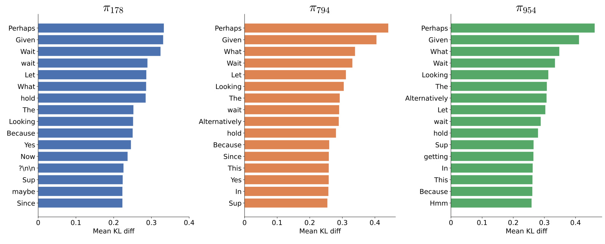
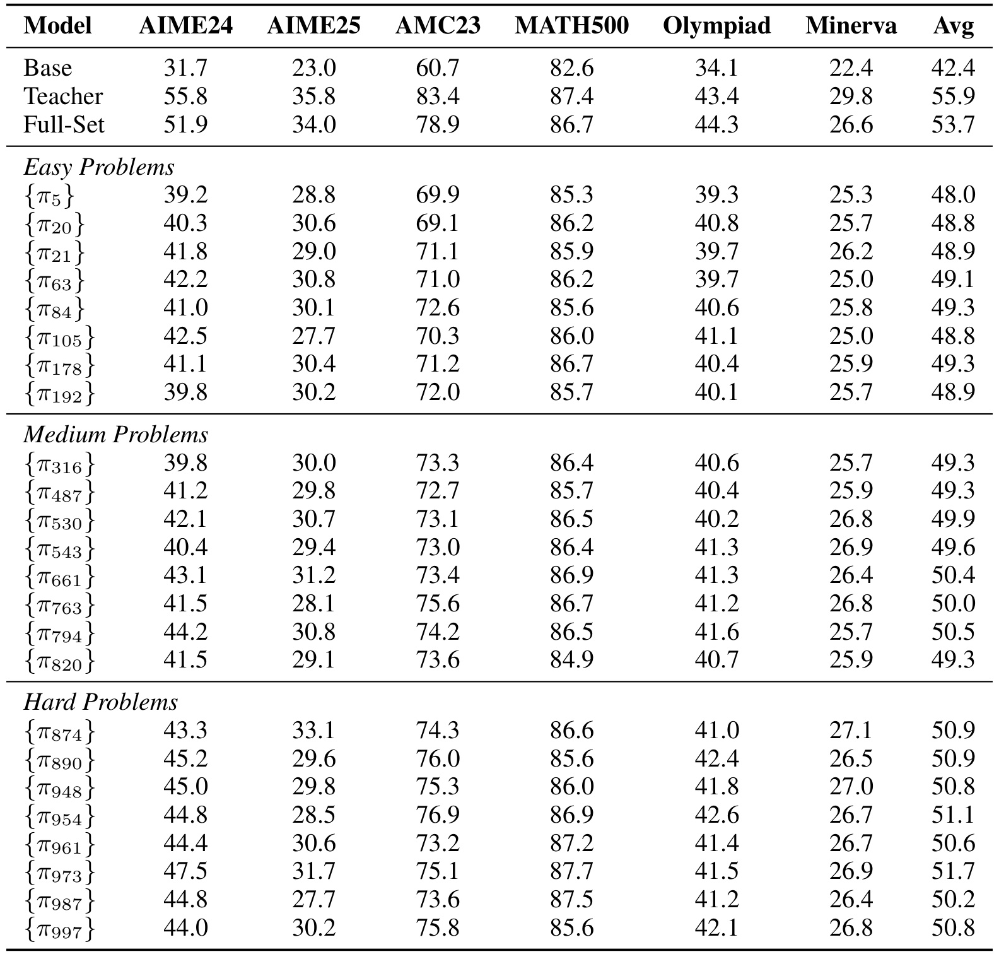
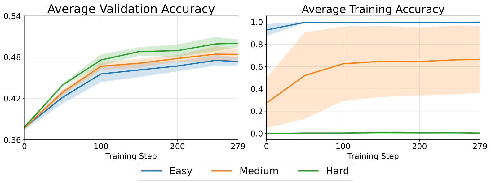
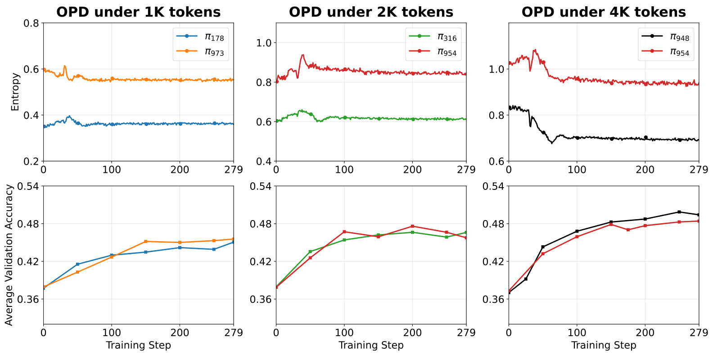
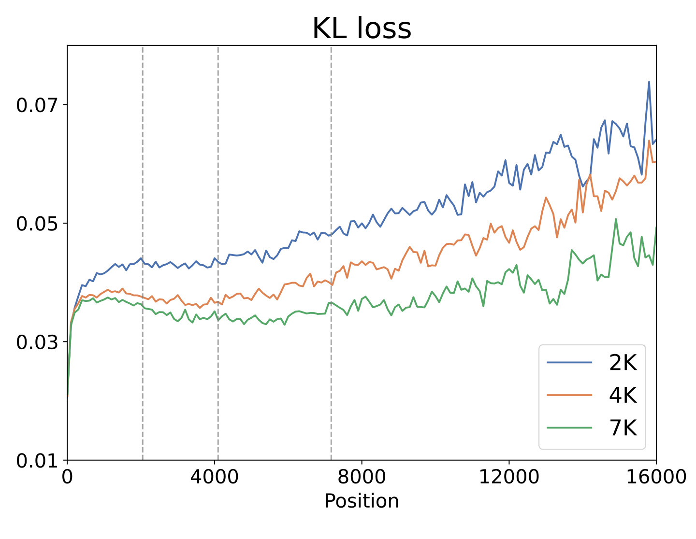
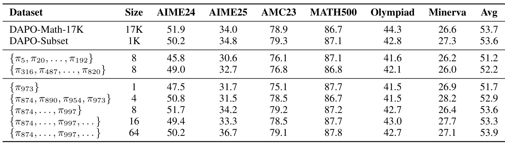
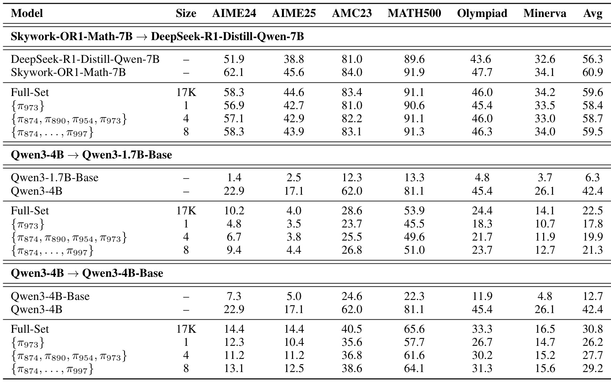
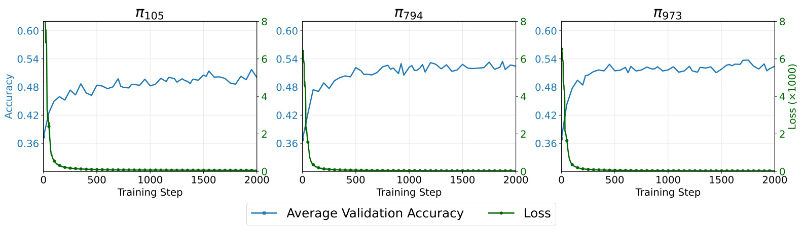
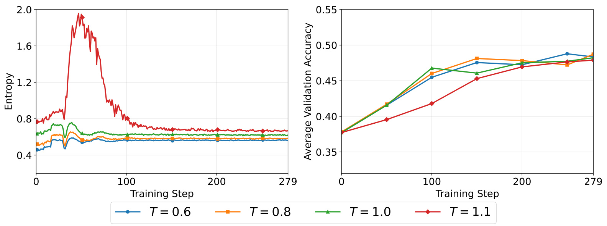

清华大学-OPD数据选择：八个难题为何能接近全量蒸馏
清华大学与美团的 Zhinan Hou、Jiaqi Zhang、Xunliang Cai、Keyou You 在《What Matters in On-Policy Distillation? A Perspective on Data Efficiency and Data Selection》中研究在线策略蒸馏的数据效率与筛选方法。一作在美团实习期间完成工作。论文于2026-09-04公开arXiv v1，本笔记精读日期为2026-09-08；论文入口。未核验到本文独立代码仓库，实验基于verl与vLLM。以下数字来自原文19页PDF，未独立复现。
在线策略蒸馏已广泛用于提升大模型推理能力，但数据侧机制仍缺乏研究：究竟需要多少训练数据，什么数据最有效，又是什么因素真正推动学生改进？在高质量数据稀缺或获取昂贵的领域，回答这些问题尤其重要。
1. 背景和问题
蒸馏的数据单位正在变化
大模型后训练里的“数据少”有多种含义。监督微调通常把一条题目和一条固定回答作为训练样本，反复读取同一条记录，看到的目标文本基本不变。在线策略蒸馏则让学生在当前参数下重新生成回答，教师对学生真正走到的每一个前缀给出下一词分布。即使题目只有一个，学生也可能在不同训练时刻走出不同的推导、分支、回退和错误路径。因此，一个输入提示并不等于一条静态监督轨迹，也不等于一次梯度更新。这篇论文把问题的重心从蒸馏算法怎样改进转到什么输入能产生有用的在线轨迹，数据效率结论必须放在这种动态监督单位下理解。
作者研究三个相互关联的问题：一条题目能否让学生在其他题目上进步；如果可以，哪些题目更有效；为什么难题比简单题更适合作为蒸馏入口。最后才问需要多少个这样的入口才能接近全量训练。这种实验顺序有价值，因为直接比较八题与全量，只能说明某个小集合表现好，不能说明好在哪里。先固定为单题训练，可以暂时移除训练集多样性这一变化因素；再比较不同难度，再控制轨迹长度与熵，才能把数据选择的相关性逐步拆开。全文的主要贡献是经验研究和一个易于实施的筛选规则，没有提出新的模型架构，也没有求解最优训练集的理论算法。
为什么答不对仍可能有监督价值
在依赖最终答案奖赏的数学强化学习中，如果同一题的一组回答全部错误，组内相对优势可能无法提供有区分度的方向；全部正确的容易题也可能遇到类似问题。在线蒸馏的监督对象不同：即使整段推理没有得到正确答案，教师仍能在许多局部前缀上对下一步表达、继续推导、提出另一种思路给出不同于学生的概率分配。因此，教师在十六次采样中没有答对这道题，与教师在所有局部决策上都没有可传递信息并不等价。作者观察到的零训练正确率伴随验证提升，正是这一差异的实证表现，但不能被解释为错误答案本身更有价值。
这里必须区分终局可解性与轨迹可学习性。一个困难输入可以让模型较长时间处在需要组织推理的状态，持续提供可比较的下一词分布；一个简单输入很快收敛到最终答案，能暴露的中间状态较少。论文据此推测，少量难题能够承载跨题目通用的推理结构，如转折、暂缓结论和改换路径。这个解释符合后面的token统计，却仍是从行为和分布变化推断机制，不能仅凭出现Alternatively就断言模型获得了可靠的自我反思能力。词汇层面的教师对齐、完整推理过程的正确性和最终任务收益，始终需要分开测量。
把极端少样本放回模型与任务范围
主实验并不是一个未经训练的小模型从单题中学会数学。学生是DeepSeek-R1-Distill-Qwen-1.5B，已经拥有推理训练基础；教师是其经过GRPO训练的JustRL-DeepSeek-1.5B，对应更强能力而非更多参数。教师和学生在主要配对里同为1.5B，知识差异主要来自后训练状态。起点模型在六个数学基准上的平均成绩已经是42.4%，所以单题蒸馏更像是在已有能力上调整策略使用方式。后文加入Qwen3的Base学生是有意义的补充，但测试仍集中在数学，不构成开放领域、代码、工具调用或推荐排序上的有效性证据。
训练题来自DAPO-Math-17K。受算力限制，作者先随机抽取1000题作为难度评估池，再用师生两个模型分别采样十六次回答进行排序。这个候选池本身并非随手找到的八题，而且筛选有前期计算开销。困难程度相对于这对模型和这套答案校验规则定义，换一个更强教师、不同输出长度或不同答案解析器，排序都可能变化。附录逐项公开了代表题的题干及ground truth，有利于复核，但有限采样的零命中不等于题目在数学上不可解，也不等于模型的真实成功概率精确为零。引号中的unsolvable应理解为实验中的未成功样本。
数据效率的分母同样需要认真核对。全量基线遍历17K题一次产生279个训练步，单题与少题实验为了对齐更新次数，也默认进行279步训练；每个提示还会生成八条响应。这样，小题集会被反复采样，独特提示数很少而累计轨迹数仍然可观。若困难输入自然生成更长CoT，它甚至可能增加每步的生成成本。本文没有给出完整的各方案总训练token、端到端GPU小时和选题成本对照，不能把17K除以8的倍率宣传为算力节约。更稳健的收益定位，是降低对大量不同高质量问题的依赖，帮助理解在已有训练预算下应把学生置于哪些状态。
实际迁移时，可以先检验少量具有分支和纠错空间的输入是否足以形成有效训练轨迹，再判断还需要补哪些领域覆盖。对推荐和广告链路，本文最多启发以轨迹产生的监督丰富度评价样本，不能直接替代用户分布覆盖、长尾商品保障或点击标签学习。推荐目标往往不是可规则校验的最终数学答案，反复围绕八个用户场景训练也可能损伤覆盖。保留这层任务差异，才能把有用的问题带走，而不会把数学蒸馏中的特殊结果误当成通用小数据配方。尤其当任务包含事实检索时，输入集合还决定访问哪些知识；数学推理中的程序性结构迁移未必能够弥补知识缺失。
从监督密度再看一次，本文每个已访问前缀保留十六个候选词的概率关系，因此一次响应可贡献许多局部相对偏好。八个不同问题、每题反复生成的多条回答、每条回答里的多位置分布，这三个层次对应不同资源。减少第一层不会自动减少后两层，甚至可能通过困难问题增加后两层。只有同时记录独特提示数、实际响应数、有效监督位置数以及每位置教师计算，才能区分输入冗余被移除，还是将同样计算集中到更有用的推理状态。这个区分是读懂数据选择结果的前提。
2. 方法
2.1 学生轨迹上的反向KL与top-k监督
原文第二节从标准OPD目标开始。给定提示，学生先按自己的当前策略生成响应，教师随后在这些学生前缀上计算分布。训练方向是减小学生分布相对教师分布的反向KL。原文公式（1）与（2）表达同一个序列目标及其自回归分解。为避免原文把响应长度和教师标记写成相近字母引起混淆，下面统一以响应长度$N$表示求和上界。
符号解释：$D_x$是提示分布；$x$是当前提示；$\theta$是学生参数；$\pi_\theta$和$\pi_T$分别是学生、教师的序列策略；$\hat y$是学生采样的响应，$N$是其长度，$t$是生成位置。$p_t(v)=\pi_\theta(v\mid x,\hat y_{<t})$与$q_t(v)=\pi_T(v\mid x,\hat y_{<t})$都在同一个学生生成的前缀上评估词$v$。$D_{\mathrm{KL}}$是KL散度，方向为学生到教师。自回归分解强调每一步的分布差都在学生实际访问的状态上衡量，不是脱离轨迹直接比较两个模型的词频。
完整词表监督需要较大内存，论文采用学生top-k变体。每个位置先从学生概率最大的词中选出集合，再把双方的分布都限制到这个同一集合上重新归一化。原文公式（3）为：
符号解释：$S_t$是当前位置由学生选出的$k$个候选词，实验固定$k=16$；$u$是求和词索引，$\mathbf 1$是集合成员指示函数；$\bar p_t$、$\bar q_t$是子集内归一化概率。教师没有另选自己的top-16集合，也不是只监督学生采样到的单个词。归一化后教师仍可在学生当前最可能走向的多个选择之间提供稠密信息，但词表尾部不在这一项损失内。因此top-k近似与完整词表KL不能在理论或数值上直接等同，论文观察首先对应这套具体监督实现。
原文公式（4）将替换后的分布代回轨迹目标：
符号解释：内部对$v$求和就是$D_{\mathrm{KL}}(\bar p_t\Vert\bar q_t)$，外层对$t$沿学生响应累加；其余符号与上式一致。公式展示序列目标，实际训练按附录使用token-mean聚合，所以响应长度分布与有效token掩码影响每步监督构成。表4中的KL coefficient为0指关闭额外KL正则，并非关闭作为蒸馏主目标的反向KL。学习率为$10^{-6}$，师生温度均为1.0。这些条件限制了向其他OPD变体、采样温度和优化强度的外推。
2.2 单题试验与双模型难度分层
原文第三节建立可重复定位的题目池。1000道候选题的难度来自师生实际完成率：每题对两个模型各生成十六个rollout，得到两份准确率，取平均并降序排序；平均值相同按DAPO原始索引破同分。排序后的题号$\pi_i$只是训练样本标识，与前文表示策略的$\pi_\theta$不是同一类对象。这个区分很重要，否则看到难例集合时容易误读成一组不同策略。
符号解释：$S_i$是学生在题目$i$上的十六次采样准确率，$T_i$是教师对应准确率，$A_i$是两者平均成功率；$A_i$越小表示实验定义下越困难。1000题分成199道容易题、626道中等题、175道困难题，对应排序位置1至199、200至825、826至1000。作者每层随机选八题，一题一个模型，合计比较24次单题训练。这支持在已抽取代表题上验证单题现象，不是证明所有可能题目都适合蒸馏。对更大数据池，先全量跑双模型难度会产生显著成本，本文未提供无采样费用的难度估计器。
每个单题模型仍训练279步，批次和mini-batch大小都为64，每个prompt生成八个响应，最大prompt长度1024、最大response长度7168。生成使用vLLM，训练使用verl，硬件为八张H800 80GB。为了观察训练之外的对齐，另从DAPO抽取100题作held-out，在各检查点每题采样十六条响应，统计师生top-16集合同时出现的token比例作为overlap ratio。这个指标测候选集合重合程度，不测正确答案；与验证准确率一起上升能提供互补证据，但不能单独充当推理能力替代指标。
2.3 长度控制诊断与难例扩展
原文第四节比较难度后，分离两种解释：难题使token分布更不确定，还是使轨迹更长。作者为三组题对设置1024、2048、4096三个最大生成长度，使每组超过99.5%的响应触达上限被截断，于是每条响应监督长度近似相同。此时熵仍不同而token数量接近；若困难题优势明显缩小，就不支持只要提高熵就能改善蒸馏的解释。随后提高同一道容易题的rollout温度作辅助干预，并用同一困难题分别训练2K、4K、7K最大长度的学生，在更长测试轨迹上逐位置测KL。
这些对照逐步排除解释，但还不是长度决定一切的因果定理。硬截断同时改变回答完整性、后段状态覆盖以及答案token是否参与监督；温度也改变路径选择和长度。长轨迹对齐更好支持延长有效推理覆盖的方向，但还需等总token、等教师调用成本和显式结构干预，判定收益来自更多监督位置还是反思回溯状态本身。原文4K题对正文写$\pi_{890}$与$\pi_{948}$，图4图例却显示$\pi_{948}$与$\pi_{954}$，复现时必须向作者或后续代码核对，不能擅自抹平。
第五节将诊断落到数据选择：从困难池构造1、4、8、16、64题集合，一题使用$\pi_{973}$，四题使用$\pi_{874}$、$\pi_{890}$、$\pi_{954}$、$\pi_{973}$，八题使用前面试验的八道难题，更大集合再从困难池补入随机题。这里没有额外打分网络，也没有改变参数规模，而是改变训练输入的支持集。八道容易题、八道中等题、随机1K与17K全量分别对照难度、题数和数据规模。可执行策略简单，但最佳八题数和难度阈值都属于经验选择，没有证明在其他师生、域或预算上最优。
3. 实验结果
3.1 单题收益与结构推理词的变化
评测覆盖AIME 2024、AIME 2025、AMC 2023、MATH500、OlympiadBench、Minerva Math。前三个样本量较小的集合每题采样十六次并报告mean@16，后三个报告mean@4；统一温度0.7、最大输出16384 token。训练曲线的Average Validation Accuracy只平均前三个竞赛集合，而表格Avg平均六项，不能把曲线终点直接当成六项均分。作者还在100题held-out轨迹上统计蒸馏前后每个token的KL下降，过滤总体频率低于0.01%的罕见token，观察收益集中在哪类局部决策。

图2给出容易题$\pi_{178}$、中等题$\pi_{794}$、困难题$\pi_{954}$对应模型中KL下降最大的十六个词。三个面板反复出现Perhaps、Given、Wait、Let、Because等组织推理的词，显著分布变化并非只围绕某道训练题的数字或最终答案展开。中等与困难题面板包含Alternatively，困难题里名次更高，而容易题没有进入前十六。与长轨迹假设相连的读法是：复杂推导更常暴露重新考虑路线的状态，学生因此能在这些状态上接受教师的概率分配。横轴是平均KL变化，不是该词出现次数，也不是每次说Alternatively后的成功率；词未上榜更不等于模型从未生成它。由于这是训练结果的事后统计而非阻断推理结构的干预，“学到反思”应保持为机制线索，不能升级为已证实的内部算法。它仍然有助于解释为何单题训练可以影响其他题目的生成行为，而不只记忆一个答案。

表1是单题有效性的主结果。原始学生Avg为42.4%，教师55.9%，全量OPD为53.7%。容易题训练的八个模型均分在48.0%至49.3%之间，中等题约49.3%至50.5%，困难题约50.2%至51.7%。因此单题有效并非只报告一个幸运例子；24个已抽取样本相对初始学生都提升，困难组整体更高。最佳困难单题$\pi_{973}$达到51.7%，比原始学生增加9.3个百分点，但距全量仍有2.0个百分点，不能写成单题完全匹配全量。按列看，它在MATH500达87.7%，高于全量86.7%，但AIME24为47.5%，低于全量51.9%；跨任务涨跌会被Avg压缩。该表没有各训练配置的多训练随机种子均值和误差，0.1或0.2个百分点的小差异不宜解释为稳定排序。它最有力地支持已有推理学生能从重复单题的动态轨迹中获得跨题收益，而非数学知识覆盖已经不重要。
3.2 难度收益究竟来自哪里

图3左边是三类单题模型的平均验证准确率，右边是各自训练题的平均正确率，阴影代表类别内题目之间的标准差。左图困难组在后期高于中等和容易组；右图容易组迅速接近全部答对，困难组保持接近零，中等组处在两者之间。训练题更难但验证更好的组合，对应最反直觉的现象：OPD里，训练题最终正确率不直接决定局部监督是否消失。教师在学生前缀上的分布仍然存在，学生能沿很多尚未答对的路径改善策略。图中困难组并非每一步都能严格肉眼读成数学上的零，个别题的原始准确率也可能非零，因此更准确的概括是非常低的训练成功率仍伴随显著验证提升。图展示类别均值与题间变异，不是随机种子置信区间；也没有在相同成本下重跑所有RL算法，只能说明与典型组内奖励机制的预期差异，不能声称全面胜过强化学习。

图4上排画token熵，下排画前三个竞赛基准的验证均分，每列对应固定最大长度。左列为1K下容易与困难题，中列为2K下中等与困难题，右列为4K下两道困难题。上排熵差明显，下排性能间距却小。正文报告前两组困难题的验证优势在默认7168长度下分别为3.9和2.4个百分点，限制长度后缩到0.5和负0.9个百分点。这比单纯难度相关性分析更接近机制检验：长度被控制后，熵差没有自动兑现为收益。超过99.5%的响应触达截断阈值，让每条响应训练token量近似匹配。但高熵本身不足与熵永远无用仍须分开，试验只覆盖少数题对和学生top-16蒸馏。右列图例和正文题号不一致已在方法节说明，读图采用可见标签，具体复现集合保留待核对。这个文本瑕疵不改变前两列明确证据，却限制第三组题目身份的可追溯精度。原文也没有证明硬截断对完整答案监督完全无影响，结论应限定为这一对照设计下的观察。

图5固定困难题$\pi_{954}$，只改变最大训练响应长度为2048、4096、7168，再对100个held-out题各生成十六条测试轨迹，按位置计算师生KL，每100 token取区间平均。横轴延伸到约16000，超出三种训练长度；纵轴越低表示分布越贴近教师。7K曲线整体较低，4K与7K在前约4000位置相近，随后差距扩大，2K则更早保持较大偏离。这个现象支持训练覆盖更长推理段，测试后半段更能持续对齐，比只看终局正确率更直接定位长时域误差。不能据此推断上下文窗口被扩容，也不能把更小KL等同于后段每一步正确；对齐对象仍是可能犯错的教师。末端曲线波动明显，需要考虑仍生成到这些位置的样本已是选择后的子集。原文未给各位置有效样本数与置信区间，长期收益方向有依据，具体末端差值则不宜脱离采样规模精细比较。
3.3 八道难题与全量训练的距离

表2将增加数据量与难度筛选分开比较。困难集合从1题、4题到8题，六项Avg由51.7%升至52.9%、53.6%；全量17K为53.7%，随机1K也为53.6%。这支持主师生配对与训练预算下，小型困难集合接近全量表现。相同八题规模，容易集合51.2%、中等52.2%、困难53.6%，难度选择分别多出2.4与1.4个百分点。扩到16与64题则为53.3%和53.9%，并非单调；作者认为八题后趋于饱和，但64题仍比八题高0.3个百分点，不能严格说增加题数完全没有收益。缺少种子误差时，更合适的读法是整体进入约53%至54%的平台。
逐项看，八题与全量AIME24为51.7%对51.9%，AIME25为34.2%对34.0%，AMC23为79.2%对78.9%，MATH500为87.2%对86.7%，OlympiadBench为42.7%对44.3%，Minerva为26.4%对26.6%。最大损失集中在OlympiadBench，平均接近不代表数学子域完全可互换。随机1K已达到53.6%，也说明不能把所有缩减收益归因于特定八题。真正比较工程价值应加随机八题、长度选八题和按成本筛题基线。八个prompt仍被反复用于279步在线采样，每题每批八个rollout，长CoT保留大量教师前向监督，Size不是总响应数或总token数。本文没有端到端算力对照，不能据此宣称数千倍训练加速。

表3检验规模和初始化变化。Skywork-OR1-Math-7B到DeepSeek-R1-Distill-Qwen-7B配对中，学生初始均分56.3%，单题58.4%，八题59.5%，全量59.6%，重现主设置中接近全量的结果。Qwen3-4B到Qwen3-1.7B-Base时，初始6.3%，八题21.3%，全量22.5%；到Qwen3-4B-Base时，初始12.7%，八题29.2%，全量30.8%。两个Base学生明显受益，但八题距全量仍有1.2与1.6个百分点，无条件说全部模型匹配全量会掩盖差距。作者对Qwen3-4B关闭thinking模式，复现也应保持这个教师设置。
这比只研究一个已蒸馏1.5B模型更有说服力，显示少题监督不只对单一规模起效，也提升较弱的Base学生。然而骨干主要在Qwen及衍生体系内，任务全部为数学；不同架构的措辞不应扩成跨任意词表、语言或多模态架构都成立。同样的难题迁移到新配对是否仍满足原阈值，也不同于每对模型重新筛选。Base学生距教师42.4%仍有很大空间，接近一个有限周期的全量蒸馏基线，与继承教师全部能力是不同目标。表3既展示可迁移趋势，也给出不能被趋势抹平的性能余量。判断技术成熟度时应同时保留这两面。
3.4 延长训练与提高温度的辅助检验

图6分别选择一道人为分层的容易、中等、困难题，将优化延长至2000步。蓝色验证曲线在前约300步快速提高，此后维持平台，绿色损失曲线快速下降并接近零。相对于默认279步，这个额外区间检查了反复用同一输入是否立即导致记忆过拟合或策略崩溃。至少对三个例子，在竞赛验证平均分上未观察到明显衰退，支持在线采样加教师分布约束具有一定稳定性。原文提出序列KL减小、优化收敛可能帮助避免崩溃，但这是解释而非证明；曲线没有给出所有单题、师生或更大学习率下的保证。损失趋零是当前训练分布与聚合方式下的现象，不意味着完整词表和所有未来前缀上师生一致，也不证明通用任务、对话风格或安全行为没有遗忘。图中损失有缩放标记，不能和图5的held-out逐token KL当作同一种平均量。长时间不崩溃也不是继续消耗算力的充分理由；实用停止点需要结合成本、子任务曲线和独立验证。这个试验回答的是会不会很快失稳，而非多训总是更好。

图7固定容易题$\pi_{178}$，把学生rollout温度设为0.6、0.8、1.0、1.1。左图较高温度确实提高熵，特别是1.1在早期出现尖峰；右图验证准确率没有同步领先，四条曲线最终汇聚到相近区域，高温早期甚至较慢。它给长度控制观察提供另一条证据：通过采样随机性制造不确定性，没有自动制造更可迁移的教师监督。高熵可能来自有价值的路线探索，也可能来自语言或判断不稳定，平均熵无法区分两者。但这仍只是一个容易题上的辅助试验，并非大规模温度搜索；温度改变后轨迹分布、长度和状态质量都可能变化，不能推断所有模型都应使用同一温度。最终差异没有显著性检验，应概括为没有一致准确率收益，不应把零点几个百分点当新结论。下一步更有依据的是按有效长推理状态选数据，而非把提高熵当作难题筛选的替代。附录D还把最大长度写为7618，与正文及表4一致的7168不同；本文采用后两处交叉一致值，附录数字保留为笔误疑点。
4. 总结
本文最有价值的认识是，OPD数据量不能只按不同题目数计量。学生持续在自身分布上采样，教师在动态前缀上提供稠密下一词监督，少数输入也能支撑大量可迁移的策略调整。24个单题模型、难度轨迹、长度与温度消融、少题扩展和额外配对串起证据：困难题往往更有效，较长CoT是比单纯高熵更有支持的解释，主1.5B配置八道难题53.6%接近17K全量53.7%。这是关于输入覆盖效率的经验发现，适合指导下一轮实验，没有消除候选筛选、重复rollout、教师推理和长轨迹token的成本。
需要保留五项局限。第一，实验集中于数学和Qwen体系，不能直接视为通用对齐或推荐系统结论。第二，难度由有限十六次采样估计，零成功不代表真实成功概率为零；题目噪声、答案解析和教师能力影响筛选。第三，长度控制未完全消除总预算、轨迹内容和截断的混杂，结构推理词变化不足以证明认知机制。第四，主表缺少多训练种子误差和正式非劣检验，接近应限于报告数字，Qwen3两个Base配对实际仍落后1.2与1.6个百分点。第五，原文4K对照题号和附录长度不一致，独立代码仓库未核验，复现前需核对，不能自行更正来源或声称已复现。
后续有三类明确实验。先做等总训练token、等GPU小时比较，把筛选阶段双模型各十六次采样纳入成本，加入随机八题、长度选八题及混合难度八题基线，才能回答资源收益。再对推理结构直接干预，在匹配长度下比较有效回溯、重复空转和真实多路径推导，记录反思后的正确率变化而不只统计关键词KL，检验长轨迹为何有用。最后扩大教师强度、学生初始化与任务域，在有可靠验证器的代码任务、无验证器的领域推理上分别试验，单独观察长尾覆盖、遗忘和泛化；CoT长度代替难度评分仍是作者建议，不能当作已跨域验证结果。
对于推荐与搜索从业者，值得研究的是样本产生监督的方式。如果正在蒸馏生成式推荐解释、规划式检索或复杂重排思路，可以把教师在学生实际前缀上的反馈作为对象，对短回答、有效长推理、错误循环分别统计成本与下游收益。但用户兴趣覆盖、商品关系方向性、曝光偏差仍需独立建模，数学终局验证器不能直接替换成点击率。扎实试验应先展示轨迹监督的可测增益，再讨论是否缩减输入集，否则数据更小可能只是把覆盖缺口隐藏在离线均分里。实际推理时还需要检查答案长度与延迟，训练期鼓励长推导和服务期高效回答不是同一个优化目标；如果收益依赖更长输出预算，也应把这个代价一起报告。